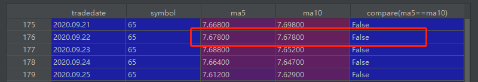
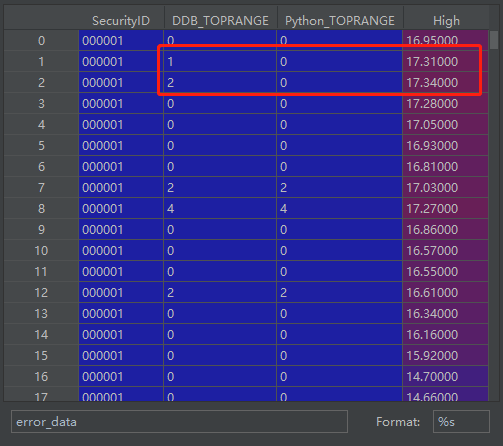

MyTT 指标库
MyTT(My麦语言 T通达信 T同花顺)是一个简单易用的Python库，它将通达信、同花顺、文华麦语言等指标公式最简化移植到了Python中，实现的常见指标包括MACD、RSI、BOLL、ATR、KDJ、CCI、PSY等。MyTT全部基于numpy和pandas的函数进行封装。
为了方便用户在DolphinDB中计算这些技术指标，我们使用DolphinDB脚本实现了MyTT中包含的指标函数，并封装在DolphinDB mytt module中。 相比于Python中的MyTT库，DolphinDB mytt module中的计算函数不仅在批处理中性能有大幅提升，而且支持DolphinDB的流式增量计算引擎，可以直接用于实时流计算场景。
因为DolphinDB mytt module是基于DolphinDB V1.30.18和DolphinDB V2.00.6开发的，所以建议用户使用DolphinDB V1.30.18和DolphinDB V2.00.6及以上版本运行mytt指标库中的函数。在DolphinDB V1.30.19和DolphinDB V2.00.7支持了BARSLAST, BARSLASTCOUNT, TOPRANGE, LOWRANGE函数在流式增量计算引擎中的使用。在DolphinDB V1.30.21和DolphinDB V2.00.9中CROSS函数与DolphinDB内置变量名冲突，函数名修改为CROSS_。
匹配不同DolphinDB版本的mytt module：
1. 函数及参数的命名与用法规范
- Python MyTT库中所有函数名大写，所有参数名大写，为适应使用者的使用习惯，DolphinDB mytt module中的函数名、参数、参数默认值均与MyTT保持一致。
- 为得到有意义的计算结果，mytt中函数的参数表示时间跨度的参数均要求至少是2。
- 由于LAST函数与DolphinDB中内置关键字冲突，mytt中将此函数命名为LAST_。
2. 环境配置
把附件的mytt.dos放在节点的[home]/modules目录下，[home]目录由系统配置参数home决定，可以通过getHomeDir()函数查看。初次使用模块文件时，[home]目录没有modules目录，手动创建modules目录，然后把mytt.dos模块文件放入该目录即可。
3. 使用范例
3.1. 脚本中直接使用指标函数
对一个向量直接使用mytt模块中的EMA函数（指数平滑法）进行计算：
//如果未设置自动加载mytt module，新会话需要手动加载一次mytt module
use mytt
close = 7.2 6.97 7.08 6.74 6.49 5.9 6.26 5.9 5.35 5.63
x = EMA(close, 5)3.2. 在SQL语句中分组使用
用户经常需要在数据表中对多组数据在每组内进行计算。在以下例子中，先构造了一个包含2个股票的数据表：
use mytt
close = 7.2 6.97 7.08 6.74 6.49 5.9 6.26 5.9 5.35 5.63 3.81 3.935 4.04 3.74 3.7 3.33 3.64 3.31 2.69 2.72
date = (2020.03.02 + 0..4 join 7..11).take(20)
symbol = take(`F,10) join take(`GPRO,10)
t = table(symbol, date, close)对其中每只股票使用mytt模块中的EMA函数进行计算：
update t set EMA = EMA(close, 5) context by symbol3.3. 返回多个列的结果
某些函数会返回多个列的结果，例如函数BIAS(乘离率指标)。
直接使用的例子：
use mytt
close = 7.2 6.97 7.08 6.74 6.49 5.9 6.26 5.9 5.35 5.63
bias1, bias2, bias3 = BIAS(close, L1 = 2, L2 = 4, L3 = 6)在SQL语句中使用的例子：
use mytt
close = 7.2 6.97 7.08 6.74 6.49 5.9 6.26 5.9 5.35 5.63 3.81 3.935 4.04 3.74 3.7 3.33 3.64 3.31 2.69 2.72
date = (2020.03.02 + 0..4 join 7..11).take(20)
symbol = take(`F,10) join take(`GPRO,10)
t = table(symbol, date, close)
select *, BIAS(close, L1 = 2, L2 = 4, L3 = 6) as `bias1`bias2`bias3 from t context by symbol
symbol date close bias1 bias2 bias3
------ ---------- ----- -------- -------- --------
F 2020.03.02 7.2
F 2020.03.03 6.97 -1.623
F 2020.03.04 7.08 0.783
F 2020.03.05 6.74 -2.46 -3.68
F 2020.03.06 6.49 -1.89 -4.839
F 2020.03.09 5.9 -4.762 -9.958 -12.333
F 2020.03.10 6.26 2.961 -1.378 -4.767
F 2020.03.11 5.9 -2.961 -3.87 -7.74
F 2020.03.12 5.35 -4.889 -8.586 -12.391
F 2020.03.13 5.63 2.55 -2.679 -4.925
GPRO 2020.03.02 3.81
GPRO 2020.03.03 3.935 1.614
GPRO 2020.03.04 4.04 1.317
GPRO 2020.03.05 3.74 -3.856 -3.639
GPRO 2020.03.06 3.7 -0.538 -3.99
GPRO 2020.03.09 3.33 -5.263 -10.061 -11.417
GPRO 2020.03.10 3.64 4.448 1.041 -2.435
GPRO 2020.03.11 3.31 -4.748 -5.293 -8.732
GPRO 2020.03.12 2.69 -10.333 -17.039 -20.921
GPRO 2020.03.13 2.72 0.555 -11.974 -15.8334. 函数计算性能
本节将以AVEDEV函数为例做直接使用的性能对比，同时使用真实股票日频数据对所有函数进行分组使用性能对比。
4.1. 直接使用性能对比
在DolphinDB中：
use mytt
close = 7.2 6.97 7.08 6.74 6.49 5.9 6.26 5.9 5.35 5.63
close = take(close, 100000)
timer x = mytt::AVEDEV(close, 100)对一个长度为100000的向量直接使用mytt模块中的AVEDEV函数，耗时为25ms。
与之对应的Python代码如下：
import numpy as np from MyTT import * import time close = np.array([7.2,6.97,7.08,6.74,6.49,5.9,6.26,5.9,5.35,5.63]) close = np.tile(close,10000) start_time = time.time() x = AVEDEV(close, 100) print("--- %s seconds ---" % (time.time() - start_time))
Python MyTT库中的AVEDEV函数耗时为25000ms，是DolphinDB mytt module中的AVEDEV函数的1000倍。测试数据量越大，性能差异越显著。
4.2. 分组使用性能对比
- 测试数据为上海证券交易所2020年，全年2919个证券（筛选交易日大于120）日频交易数据，总记录数为686,104条。
- 计算逻辑为按照股票代码进行分组计算各指标。
- 为了测试函数计算性能，DolphinDB和Python测试代码都是单线程运行。
- DolphinDB测试代码
- Python测试代码
- 下载测试数据
- Python MyTT库
测试结果如下表所示：
| 序号 | 函数 | Python（ms） | DolphinDB（ms） | 运行时间比 |
|---|---|---|---|---|
| 1 | RD | 296 | 16 | 18 |
| 2 | RET | 243 | 13 | 18 |
| 3 | ABS | 229 | 15 | 15 |
| 4 | LN | 253 | 25 | 10 |
| 5 | POW | 311 | 30 | 10 |
| 6 | SQRT | 248 | 19 | 13 |
| 7 | MAX | 390 | 34 | 11 |
| 8 | MIN | 373 | 29 | 12 |
| 9 | IF | 282 | 21 | 13 |
| 10 | REF | 740 | 17 | 43 |
| 11 | DIFF | 662 | 22 | 30 |
| 12 | STD | 1,263 | 24 | 98 |
| 13 | SUM | 1,297 | 22 | 58 |
| 14 | CONST | 258 | 22 | 11 |
| 15 | HHV | 1,207 | 30 | 40 |
| 16 | LLV | 1,218 | 31 | 39 |
| 17 | HHVBARS | 2,952 | 41 | 72 |
| 18 | LLVBARS | 2,878 | 38 | 75 |
| 19 | MA | 1,220 | 24 | 50 |
| 20 | EMA | 1,171 | 26 | 45 |
| 21 | SMA | 1,199 | 28 | 42 |
| 22 | WMA | 4,322 | 20 | 216 |
| 23 | DMA | 1,123 | 27 | 41 |
| 24 | AVEDEV | 176,652 | 32 | 5,520 |
| 25 | SLOPE | 53,703 | 29 | 1,851 |
| 26 | FORCAST | 60,321 | 38 | 1,587 |
| 27 | LAST | 4,132 | 38 | 108 |
| 28 | COUNT | 1,249 | 20 | 62 |
| 29 | EVERY | 1,267 | 28 | 45 |
| 30 | EXIST | 1,490 | 22 | 67 |
| 31 | BARSLAST | 559 | 18 | 31 |
| 32 | BARSLASTCOUNT | 607 | 17 | 35 |
| 33 | CROSS_ | 2,088 | 80 | 26 |
| 34 | LONGCROSS | 6,019 | 94 | 64 |
| 35 | VALUEWHEN | 968 | 27 | 35 |
| 36 | BETWEEN | 489 | 42 | 11 |
| 37 | TOPRANGE | 3,647 | 37 | 99 |
| 38 | LOWRANGE | 3,703 | 36 | 103 |
| 39 | MACD | 3,060 | 86 | 35 |
| 40 | KDJ | 4,705 | 144 | 32 |
| 41 | RSI | 2,539 | 103 | 24 |
| 42 | WR | 5,632 | 166 | 33 |
| 43 | BIAS | 5,318 | 135 | 39 |
| 44 | BOLL | 3,067 | 90 | 34 |
| 45 | PSY | 2,596 | 82 | 31 |
| 46 | CCI | 163,681 | 76 | 2,153 |
| 47 | ATR | 2,281 | 101 | 22 |
| 48 | BBI | 3,667 | 66 | 55 |
| 49 | DMI | 6,181 | 250 | 24 |
| 50 | TAQ | 2,292 | 64 | 35 |
| 51 | KTN | 3,170 | 164 | 19 |
| 52 | TRIX | 4,329 | 97 | 44 |
| 53 | VR | 2,732 | 117 | 23 |
| 54 | EMV | 4,437 | 132 | 33 |
| 55 | DPO | 2,455 | 59 | 41 |
| 56 | BRAR | 4,909 | 156 | 31 |
| 57 | DFMA | 2,890 | 52 | 55 |
| 58 | MTM | 1,659 | 43 | 38 |
| 59 | MASS | 4,602 | 99 | 46 |
| 60 | ROC | 2,000 | 63 | 31 |
| 61 | EXPMA | 1,900 | 49 | 38 |
| 62 | OBV | 1,790 | 94 | 19 |
| 63 | MFI | 3,488 | 158 | 22 |
| 64 | ASI | 4,173 | 316 | 13 |
从测试结果分析可知：
- DolphinDB mytt module 中的函数计算性能远远超过 Python MyTT 库，最大的性能差距达到 5520 倍，普遍性能差距在 30 倍左右。
Python pandas测试核心代码
data.groupby("symbol").apply(lambda x: RSI(np.array(x.close), N = 24))
DolphinDB测试核心代码
RSI = select symbol, tradedate, mytt::RSI(close, N=24) as `RSI from data context by symbol5. 正确性验证
基于分组使用性能对比中的测试数据和代码，验证 DolphinDB mytt module 中函数的计算结果是否和 Python MyTT 库一致。
5.1. 浮点数精度问题
结果有差异的函数
CROSS_, LONGCROSS
原因
- 浮点数精度问题
- 对于CROSS_和LONGCROSS函数，在浮点数比较上，DolphinDB mytt module中的处理比Python MyTT库更加严谨。DolphinDB mytt module中首先会对浮点数round保留小数点后6位，然后再进行大小判断，而MyTT中并没有类似处理，因此对于相同大小的浮点数，Python的判别可能会出错，如下图所示：

5.2. NULL 值的处理
结果有差异的函数
SUM, DMI, EMV, MASS, MFI, ASI
原因：
若输入向量开始包含空值，则从第一个非空位置开始计算。DolphinDB mytt module与Python MyTT库的计算规则一致。
对一个滚动/累积窗口长度为k的函数，每组最初的(k-1)个位置的结果均为空。DolphinDB mytt module与Python MyTT库的计算规则一致。
对一个滚动/累积窗口长度为k的函数，若一组中第一个非空值之后再有空值，Python MyTT库会对包含nan的窗口计算结果都处理为nan。DolphinDB mytt module会对窗口内非NULL的元素按计算规则计算，得到一个非NULL的计算结果。
DolphinDB 代码与结果：
close = [99.9, NULL, 84.69, 31.38, 60.9, 83.3, 97.26, 98.67]
mytt::SUM(close, 5);
[,,,,276.87, 260.27, 357.53, 371.51]Python 代码与结果：
close = np.array([99.9, np.nan, 84.69, 31.38, 60.9, 83.3, 97.26, 98.67])
MyTT.SUM(close,5)
array([nan, nan, nan, nan, nan, nan, 357.53, 371.51])以滑动窗口求和为例，close向量的第2个元素为空值，DolphinDB mytt module在计算第5个元素（60.9）时，回看过去5个窗口内的数据[99.9, NULL, 84.69, 31.38, 60.9]，对非NULL的元素求和，所以结果向量的第5个元素为276.87。
Python MyTT库会对包含nan的窗口计算结果都处理为nan，所以结果向量的前6个元素都为nan。
除上述因为浮点数精度问题和NULL值的处理问题导致计算结果存在差异外，其余函数计算结果的百分比误差均小于1e-10。
5.3. TOPRANGE、LOWRANGE 计算结果差异问题
TOPRANGE函数是统计S序列的某个元素是近多少周期内的最大值，TOPRANGE(High)表示创多少日新高。
mytt模块中的TOPRANGE函数与MyTT中的TOPRANGE函数在头部数据的计算中有差异，如下图所示，High序列16.95, 17.31, 17.34其TOPRANGE分别为创0日新高，1日新高，2日新高。MyTT在数据先下降再上升之后才开始统计创多少日新高，而mytt模块则从数据头部就开始统计创多少日新高。从而造成数据头部的计算结果会有差异。

LOWRANGE函数与上述情况相同。
6. 实时流计算案例
在DolphinDB V1.30.3 中发布的响应式状态引擎（createReactiveStateEngine）是许多金融场景流批统一计算中的重要构件，DolphinDB mytt module在开发时就对其做了适配，使得mytt模块中的大部分函数可以在响应式状态引擎中实现增量计算。
无需支持在响应式状态引擎的中使用的函数：
RET, CONST。所有mytt中的技术指标函数均支持增量计算。
示例代码如下：
def cleanEnvironment(){
try{ unsubscribeTable(tableName="snapshotStream",actionName="aggr1min") } catch(ex){ print(ex) }
try{ dropStreamEngine("myttReactiveStateEngine") } catch(ex){ print(ex) }
try{ dropStreamEngine("aggr1min") } catch(ex){ print(ex) }
try{ dropStreamTable(`snapshotStream) } catch(ex){ print(ex) }
try{ dropStreamTable(`outputTable) } catch(ex){ print(ex) }
undef all
}
cleanEnvironment()
go
//load modules
use mytt
//define stream table
name = `tradetime`SecurityID`high`low`open`close`vol
type = `TIMESTAMP`SYMBOL`DOUBLE`DOUBLE`DOUBLE`DOUBLE`INT
share streamTable(100:0, name, type) as snapshotStream
name = `SecurityID`tradetime`K`D`J`DIF`DEA`MACD`UPPER`MID`LOWER`ROC`MAROC
type = `SYMBOL`TIMESTAMP`DOUBLE`DOUBLE`DOUBLE`DOUBLE`DOUBLE`DOUBLE`DOUBLE`DOUBLE`DOUBLE`DOUBLE`DOUBLE
share streamTable(1000000:0, name, type) as outputTable
//register stream computing engine
reactiveStateMetrics=<[
tradetime,
mytt::KDJ(close, high, low, N=9, M1=3, M2=3) as `K`D`J,
mytt::MACD(close, SHORT_=12, LONG_=26, M=9) as `DIF`DEA`MACD,
mytt::KTN(close, high, low, N=20, M=10) as `UPPER`MID`LOWER,
mytt::ROC(close, N=12, M=6) as `ROC`MAROC
]>
createReactiveStateEngine("myttReactiveStateEngine", metrics=reactiveStateMetrics, dummyTable=snapshotStream, outputTable=outputTable, keyColumn=`SecurityID, keepOrder=true)
createTimeSeriesEngine(name="aggr1min", windowSize=60000, step=60000, metrics=<[first(open),max(high),min(low),last(close),sum(vol)]>, dummyTable=snapshotStream, outputTable=getStreamEngine("myttReactiveStateEngine"), timeColumn=`tradetime, useWindowStartTime=true, keyColumn=`SecurityID)
subscribeTable(tableName="snapshotStream", actionName="aggr1min", offset=-1, handler=getStreamEngine("aggr1min"), msgAsTable=true, batchSize=2000, throttle=1, hash=0, reconnect=true)7. DolphinDB mytt 指标列表
7.1. 核心工具函数
| 函数 | 语法 | 解释 |
|---|---|---|
| RD | RN(N, D = 3) | 四舍五入取3位小数 |
| RET | RET(S, N = 1) | 返回序列倒数第N个值，默认返回最后一个 |
| ABS | ABS(S) | 返回序列或数值S的绝对值 |
| LN | LN(S) | 求序列S底是e的自然对数 |
| POW | POW(S, N) | 求序列S的N次方 |
| SQRT | SQRT(S) | 求序列S的平方根 |
| MAX | MAX(S1, S2) | 配对比较两个序列，给出比较以后大的序列 |
| MIN | MIN(S1, S2) | 配对比较两个序列，给出比较以后小的序列 |
| IF | IF(S, A, B) | 序列布尔判断，if S == True return A else B |
| REF | REF(S, N = 1) | 对序列整体下移动N个单位，返回平移后的序列，会产生NAN |
| DIFF | DIFF(S, N = 1) | 序列S的前一个值减后一个值，序列头部会产生NAN |
| STD | STD(S, N) | 求序列S的滚动N日标准差，返回滚动标准差序列 |
| SUM | SUM(S, N) | 对序列S求滚动N日总和 |
| CONST | COUNT(S) | 返回序列S最后一个值组成常量序列 |
| HHV | HHV(S, N) | 求序列S的滚动N日最大值，返回滚动最大值序列 |
| LLV | LLV(S, N) | 求序列S的滚动N日最小值，返回滚动最小值序列 |
| HHVBARS | HHVBARS(S, N) | 求序列S的滚动N期内最高值到当前的天数, 返回距离天数序列 |
| LLVBARS | LLVBARS(S, N) | 求序列S的滚动N期内最低值到当前的天数, 返回距离天数序列 |
| MA | MA(S, N) | 求序列S的N日简单移动平均值，返回移动平均序列 |
| EMA | EMA(S, N) | 求序列S的指数移动平均，为了精度，S>4*N，EMA至少需要120周期alpha = 2/(span+1) |
| SMA | SMA(S, N, M = 1) | 中国式的SMA，至少需要120周期才精确 (雪球180周期)，alpha = 1/(1+N) |
| WMA | WMA(S, N) | 求S序列S的N日加权移动平均，Yn = (1*X1+2*X2+3*X3+...+n*Xn)/(1+2+3+...+n) |
| DMA | DMA(S, A) | 求S的动态移动平均，A作平滑因子，必须 0 < A < 1 |
| AVEDEV | AVEDEV(S, N) | 求序列S的滚动平均绝对偏差 |
| SLOPE | SLOPE(S, N) | 求序列S的滚动N周期内的线性回归模型的斜率 |
| FORCAST | FORCAST(S, N) | 求序列S的滚动N周期内的线性回归模型的预测值 |
| LAST_ | LAST_(S, A, B) | BOOL型判断，从前A日到前B日一直满足BOOL条件，要求A > B & A > 0 & B >= 0 |
7.2. 应用层函数(通过核心工具函数实现）
| 函数 | 语法 | 解释 |
|---|---|---|
| COUNT | COUNT(S, N) | 序列S是BOOL型，求最滚动N天内满足BOOL为True的天数 |
| EVERY | EVERY(S, N) | 序列S是BOOL型，求最滚动N天内全部满足BOOL为True的天数 |
| EXIST | EXIST(S, N) | 序列S是BOOL型，判断最滚动N天内是否存在满足BOOL为True |
| BARSLAST | BARSLAST(S) | 序列S是BOOL型，统计上一次条件成立到当前的周期 |
| BARSLASTCOUNT | BARSLASTCOUNT(S) | 序列S是BOOL型，统计连续满足条件的周期数 |
| BARSSINCEN | BARSSINCEN(S, N) | 序列S是BOOL型，统计滚动周期N内第一次满足条件到当前的周期数 |
| CROSS_ | CROSS_(S1, S2) | 判断两个序列是否交叉的函数，判断向上金叉穿越 CROSS_(MA(C,5),MA(C,10)) ，判断向下死叉穿越 CROSS_(MA(C,10),MA(C,5)) |
| LONGCROSS | LONGCROSS(S1, S2, N) | 判断两个序列是否在个持一定周期后再交叉的函数，判断两个序列是否再个持N周期后再交叉，N = 1时等同于CROSS_(S1, S2) |
| VALUEWHEN | VALUEWHEN(S, X) | 解决当S条件成立时,取X的当前值,否则取S的上个成立时对应的X值 |
| BETWEEN | BETWEEN(S, A, B) | 判断S序列是否介于A和B之间的函数，当S处于A和B之间时为真，包括 A<S<B 或 A>S>B |
| TOPRANGE | TOPRANGE(S) | 统计S序列的某个元素是近多少周期内的最大值 |
| LOWRANGE | LOWRANGE(S) | 统计S序列的某个元素是近多少周期内的最小值 |
7.3. 技术指标函数(全部通过核心工具和应用函数实现）
| 函数 | 语法 | 解释 |
|---|---|---|
| MACD | MACD(CLOSE, SHORT = 12, LONG = 26, M = 9) | 平滑异同平均线 |
| KDJ | KDJ(CLOSE, HIGH, LOW, N = 9, M1 = 3, M2 = 3) | KDJ指标 |
| RSI | RSI(CLOSE, N = 24) | RSI指标,和通达信小数点2位相同 |
| WR | WR(CLOSE, HIGH, LOW, N = 10, N1 = 6) | W&R 威廉指标 |
| BIAS | BIAS(CLOSE, L1 = 6, L2 = 12, L3 = 24) | BIAS乖离率 |
| BOLL | BOLL(CLOSE, N = 20, P = 2) | BOLL指标，布林带 |
| PSY | PSY(CLOSE, N = 12, M = 6) | PSY指标，心理线 |
| CCI | CCI(CLOSE, HIGH, LOW, N = 14) | CCI指标，顺势线 |
| ATR | ATR(CLOSE, HIGH, LOW, N = 20) | 真实波动N日平均值 |
| BBI | BBI(CLOSE, M1 = 3, M2 = 6, M3 = 12, M4 = 20) | BBI多空指标 |
| DMI | DMI(CLOSE, HIGH, LOW, M1 = 14, M2 = 6) | DMI动向指标 |
| TAQ | TAQ(HIGH, LOW, N) | 唐安奇通道(海龟)交易指标 |
| KTN | KTN(CLOSE, HIGH, LOW, N = 20, M = 10) | 肯特纳交易通道 |
| TRIX | TRIX(CLOSE, M1 = 12, M2 = 20) | 三重指数平滑平均线 |
| VR | VR(CLOSE, VOL, M1 = 26) | VR容量比率 |
| EMV | EMV(HIGH, LOW, VOL, N = 14, M = 9) | EMV简易波动指标 |
| DPO | DPO(CLOSE, M1 = 20, M2 = 10, M3 = 6) | 区间震荡线 |
| BRAR | BRAR(OPEN, CLOSE, HIGH, LOW, M1 = 26) | BRAR-ARBR 情绪指标 |
| DFMA | DFMA(CLOSE, N1 = 10, N2 = 50, M = 10) | DFMA平行线差指标 |
| MTM | MTM(CLOSE, N = 12, M = 6) | MTM动量指标 |
| MASS | MASS(HIGH, LOW, N1 = 9, N2 = 25, M = 6) | 梅斯线 |
| ROC | ROC(CLOSE, N = 12, M = 6) | 变动率指标 |
| EXPMA | EXPMA(CLOSE, N1 = 12, N2 = 50) | 指数平均数指标 |
| OBV | OBV(CLOSE, VOL) | 能量潮指标 |
| MFI | MFI(CLOSE, HIGH, LOW, VOL, N = 14) | MFI资金流量 |
| ASI | ASI(OPEN, CLOSE, HIGH, LOW, M1 = 26, M2 = 10) | 振动升降指标 |
8. 路线图（Road Map）
- 长期保持对Python MyTT包的同步更新。
9. 附件
- V1.30.18, V2.00.6: mytt.dos
- V1.30.19, V2.00.7: mytt.dos
- DolphinDB测试代码
- Python测试代码
- 下载测试数据
- Python MyTT库
计算性能测试环境
- CPU类型：Intel(R) Core(TM) i7-7700 CPU @ 3.60GHz 3.60 GHz
- 逻辑CPU总数：8
- 内存：32GB
- OS：Windows 10